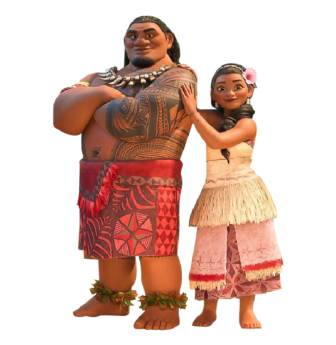
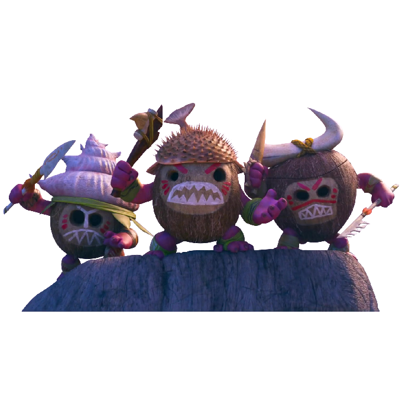
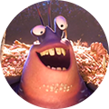
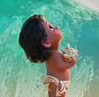
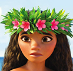
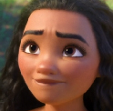
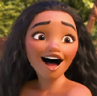
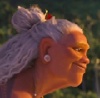
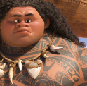

Moana, 2016
애니메이션, 모험, 가족, 판타지, 뮤지컬 | 미국 | 113분 | 론 클레멘츠, 존 머스커
올 겨울 최고의 디즈니 콤비 모아나 & 마우이
바다에서 펼쳐지는 황홀한 모험의 신세계!
모든 것이 완벽했던 모투누이 섬이 저주에 걸리자
바다가 선택한 소녀 모아나는 섬을 구하기 위해 머나먼 항해를 떠난다.
저주를 풀기 위해서는 오직 신이 선택한 전설의 영웅 마우이의 힘이 필요한 상황!
모아나는 마우이를 우여곡절 끝 설득해, 운명적 모험을 함께 떠나는데…
바다가 부르면 운명적 모험이 시작된다!!
모아나
모아나는 하와이어로 바다를 의미한다. 다혈질이고 한다면 하는 성격으로 어린나이에도 불구하고 대범하고 당차며, 책임감 있다. 모투누이 추장의 딸로 자신은 공주가 아니라고 소개한다.
어릴적 바다의 선택을 받아 암초 넘어의 바다로 나온 경험이 있다. 때문에 섬에 안좋은 징조가 나타나기 시작한 후, 할머니의 말을 듣고 숨겨진 동굴에서 북을 치고 조상들의 환영을 보게된다. 그리고 사명감을 자각해 테 피티의 심장을 지니고 마우이를 찾아 모험을 떠난다.
마우이
반인반신으로 바람과 바다의 반신이다. 수준높은 항해술과 조타술 실력을 가지고 있어 모아나에게 가르쳐준다. 과거 지하세계에서 불을 훔쳐 인간들에게 가져다주고, 빠르게 움직이던 태양의 속도를 늦추는 등 많은 업적을 남겨 인간들에게 영웅으로 불려졌다. 그러던 중 테피티의 심장을 훔쳐 여러 섬이 오염되게 하는 등 본인의 갈고리 마저 잃어버린다. 훔쳤던 테피티의 심장을 되돌려 놓기 위해 모아나와 여행을 떠난다.
헤이헤이
눈이 사시이며, 매우 멍청하다. 뜻하지 않게 모아나의 카누에 탑승해 모아나, 마우이와 테피티의 심장을 되돌려 놓는 여행을 함께하게 된다. 방향감각이 전혀 없고, 사물 구분도 잘 못 한다. 돌을 먹는 버릇이 있어 테 피티의 심장을 삼키기도 한다.
처음 바다를 봤을 때는 충격을 받은 듯 소리를 지르고 도망가려 하지만, 여행을 마친 후에는 다시 바다로 돌아가려고 하는 모습을 보여준다.
테카/테피티
테피티의 심장 주인이자 여신이다.
마우이가 심장을 가져갔을 때 처음 나타났으며, 온 몸이 돌과 용암으로 이루어져있다. 심장을 잃어버린 테 피티는 힘이 약해졌고, 바다를 통해 검은 오염이 퍼져나간다.
모아나가 심장을 되돌려 놓자 테 카에서 테 피티로 돌아오고, 오염되었던 섬들을 원상태로 돌려준다.
탈라
모아나의 할머니로 모아나가 바다의 선택을 받았다는 사실을 알고 있는 유일한 사람이다. 어린 모아나가 바다에게 받은 테 피티의 심장을 보관하고 있다가 모아나가 바다로 나가기로 결심한 때에 돌려준다.
등에 커다란 가오리 문신이 있으며, 죽으면 가오리가 되어 환생하고 싶다고 말한다.
마우이의 전설을 어린 아이들에게 들려주고, 섬이 위기에 처했을 때 바다로 가기를 망설이는 모아나에게 의지를 복돋아주기도 한다.

투이&apm;시나
투이 - 모아나의 아버지이자 모투누이 섬의 추장이다. 어렸을 때 친구와 암초너머의 바다로 넘어가려다가 친구를 잃은 경험이 있어 모아나가 바다로 나가는 것을 싫어한다.
시나 - 모아나의 어머니이자 투이의 아내이다. 모아나가 바다로 못 나가게 하는 아버지로 인해 우울해 할 때 투이의 과거를 들려주며 이해해달라 말한다. 모아나가 바다로 나가기로 결심했을 때는 먹을 것을 챙겨주며 응원한다.

카카모라
테피티의 심장을 노리는 코코넛으로 해적이다. 3개로 나누어질 수 있는 커다란 배를 타고 다니며, 떼로 몰려 다닌다. 바람총을 이용해 사정없이 독침을 쏜다.
테피티의 심장을 뺏기 위해 모아나와 마우이를 위협하며, 테피티의 심장을 먹은 헤이헤이를 납치하기도 한다. 헤이헤이를 되찾기 위해 카카모라 배에서 뛰어다니는 모아나를 향해 쏜 독침을 잘못하여 족장이 맞아 쓰러진다. 또한, 마우이의 항해술 덕에 배끼리 부딪혀 침몰하게 된다.
타마토아
마우이의 갈고리를 가지고 있던 매우 거대한 게이다. 반짝이는 것을 좋아하고 등껍질에 보물을 잔뜩 올려놓고 다니며 본모습보다는 화려하게 꾸민 겉모습이 더 중요하다고 말한다.
오래전 마우이와 싸우다 마우이에게 다리 한쪽을 뜯겼다. 때문에 마우이를 원망하지만 마우이의 문신을 따라해 금은보화로 등껍질을 꾸몄다고 말한다.







1CG와 수작업의 조화로 눈길을 사로잡는 배경!
제작진은 바다 전체의 비주얼을 위해 탁 트인 해변부터 ‘모아나’와 교감하는 캐릭터로서의 바다까지 다양한 바다의 모습을 표현했다. 물을 사실적으로 표현하기 위해 파도의 높이와 속도, 방향을 설정하고 배가 떠있는 바다의 부력까지 묘사하는 시스템을 마련했다.
2캐릭터의 본질을 완성시킨 자연을 담은 의상!
제작진은 실제 섬에 있는 자연의 재료로만 의상을 디자인 했다.
‘모아나’의 의상은 폴리네시아 문화에서 왕족을 상징하는 빨강색을 주로 사용했다. 모아나의 의상은 바다 생물들의 무늬, 조개껍데기, 진주, 나뭇잎을 활용했다는 점에서 또 하나의 바다라고 할 수 있다. ‘모아나’가 성장할수록 바다와 가까워진다는 의미를 의상에도 담았다.
3감성과 스토리텔링의 완벽한 조화로 완성된 OST!
푸른 바다를 항해하는 자부심과 ‘모아나’와 ‘마우이’의 스스로에 대한 신념까지, 뮤지컬과 영화 음악으로 정평 난 작곡가들이 태평양 문화를 닮은 멜로디 위 익살스러운 스토리텔링을 얹어 완성해냈다.